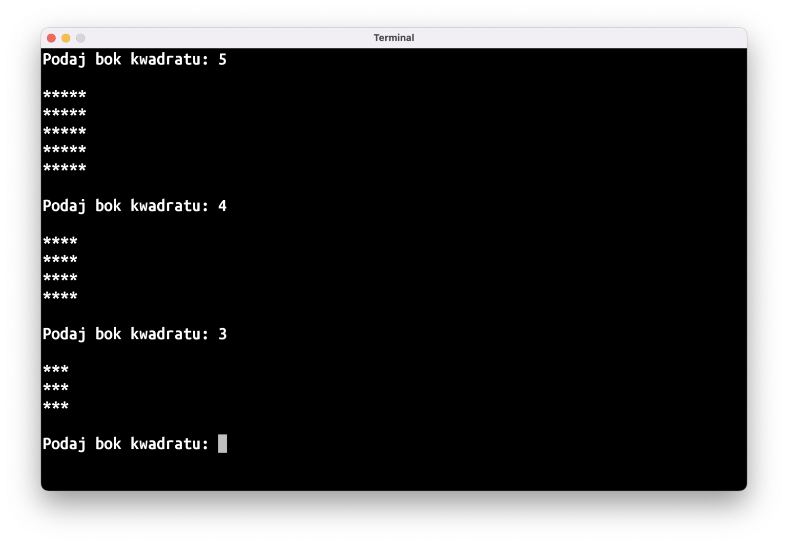
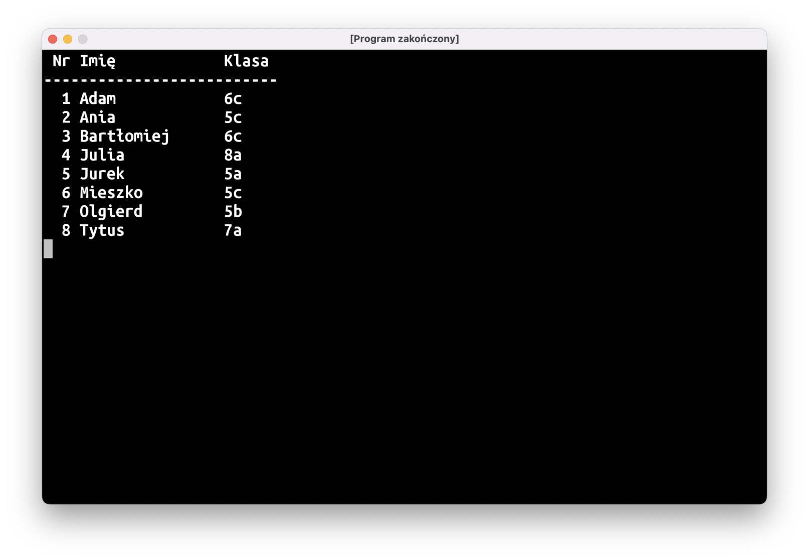
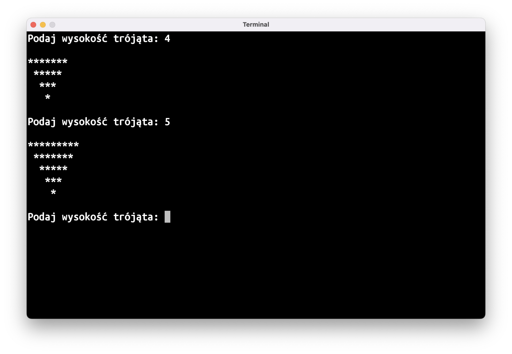

Tak, jak pisałem na Slack’u, następnych kilka zajęć będzie przebiegało wg. planu:
- 15 minut: omówienie zadania z poprzednich zajęć
- 30 minut: nowy materiał
- 45 minut: wspólna praca nad nowymi zadaniami
Omówienie zadania: Zły Bliźniak
Na wstępie musimy oczywiście wczytać z klawiatury imię:
print("Podaj swoje imię: ")
val imię = readln()
Najważniejszą częścią tego zadania jest “odwrócenie” imienia. Możemy to osiągnąć przechodząc przez imię literka po literce i dodając kolejne literki na początku tekstu:
var odwróconeImię = ""
for (literka in imię) {
odwróconeImię = literka + odwróconeImię
}
Nie jest to zbyt intuicyjne, dlatego też proponuję, żebyście prześledzili działanie tego programu dla kilkuliterowego wyrazu.
Pozostaje tylko wypisanie wyniku na ekran:
fun main() = terminal {
print("Podaj swoje imię: ")
val imię = readln()
var odwróconeImię = ""
for (literka in imię) {
odwróconeImię = literka + odwróconeImię
}
println("Twój zły bliźniak ma na imię $odwróconeImię")
}
Bonus: Palindrom
Palindrom to wyraz albo wyrażenie, które brzmi tak samo czytane od lewej do prawej i od prawej do lewej. Inaczej mówiąc, “odwrócony” palindrom jest taki sam jak “nieodwrócony”.
Możemy opakować kawałek kodu ze “Złego Bliźniaka” w funkcję:
fun odwróć(tekst: String): String {
var wynik = ""
for (litera in tekst) {
wynik = litera + wynik
}
return wynik
}
A następnie użyć jej w instrukcji warunkowej:
fun main() = terminal {
print("Podaj wyraz: ")
val wyraz = readln()
if (wyraz == odwróć(wyraz)) {
println("Wyraz '$wyraz' to palindrom!")
} else {
println("Wyraz '$wyraz' nie jest palindromem.")
}
}
Nowy materiał
class
Kilka zajęć temu, gdy poznawaliśmy listy, pisaliśmy program, który operował na liście uczestników zapisanej w ten sposób:
val uczniowie = listOf<String>(
"Adam",
"Ania",
"Bartłomiej",
"Julia",
"Jurek",
"Mieszko",
"Olgierd",
"Tytus",
)
Każdy uczeń reprezentowany był w programie przez obiekt String. Było to wystarczająco dobre rozwiązanie, gdy potrzebowaliśmy przechowywać tylko imię każdego z uczniów. Co jednak zrobić, jeśli chcemy dla każdego ucznia mieć więcej danych, np.: do której klasy chodzi, albo jakie zna języki programowania?
Oczywiście da się ten problem obejść bez dodatkowych narzędzi (trzymając kilka list albo listę list, albo stosując jakieś jeszcze pokraczniejsze konstrukcje), ale najlepszym rozwiązaniem będzie utworzenie własnego typu danych.
Potrzebujemy specjalnego “klocka”, w którym będziemy trzymać dane o uczniu:
class Uczeń
Po słowie kluczowym class podajemy nazwę typu – w tym przypadku będzie to Uczeń (uwaga: zgodnie z przyjętymi konwencjami nazewniczymi, nazwy typów danych zaczynamy od wielkiej litery). Taki zapis wystarczy, żeby stworzyć pierwsze obiekty tego typu:
fun main() = terminal {
val adam = Uczeń()
}
class Uczeń
Obiekty tworzymy “wywołując” typ przy użyciu okrągłych nawiasów (), tak jak w robiliśmy to w przypadku funkcji. Tak naprawdę wywołujemy specjalną funkcję nazywaną konstruktorem obiektu. Ukrywa się ona w pierwszej linijce kodu opisującego nasz typ:
class Uczeń()
// ~~
// To jest konstruktor. Jeśli nie przyjmuje on żadnych
// parametrów, można go pominąć, dlatego też w poprzednim
// bloczku kodu tych nawiasów nie było.
Ten kod można uruchomić, ale na razie nasz typ Uczeń nie jest zbyt użyteczny: nie da się w nim przechować żadnych danych, a przecież chcemy w nim trzymać takie informacje jak imię czy klasę. Podobnie jak w przypadku obiektu typu List<>, którego można spytać o ilość elementów na liście przy użyciu właściwości .size, chcielibyśmy, żeby nasz obiekt Uczeń można było odpytać o imię czy klasę:
fun main() = terminal {
val adam = Uczeń()
println("${adam.imię} chodzi do klasy ${adam.klasa}")
}
Musimy do naszego typu dodać informację o jego własnościach. Najpierw, po nazwie typu musimy dodać ciało (ang. body) klasy przy użyciu nawiasów klamrowych {}:
class Uczeń {
// Podobnie jak pusty konstruktor, puste ciało klasy można
// pominąć – dlatego w poprzednich blokach nie było go.
}
A następnie opisać w ciele klasy, jakie własności powinien mieć nasz obiekt:
class Uczeń {
val imię: String
val klasa: String
}
Powyższy kod dalej będzie podkreślony na czerwono: stałe w obiekcie (czyli ich własności), podobnie jak inne stałe w naszym programie, muszą mieć do siebie przypisany jakiś obiekt.
Wartości tych stałych najlepiej będzie przekazać przy jego tworzeniu:
val adam = Uczeń("Adam", "6c")
Pamiętajcie: obiekty tworzone są przy użyciu konstruktora, który jest funkcją. Do tej pory nie przyjmował on żadnych parametrów, ale teraz chcemy, żeby przyjmował imię oraz klasę, musimy więc dodać te parametry – tak jak do zwykłych funkcji:
class Uczeń(imię: String, klasa: String) {
val imię: String
val klasa: String
}
Ostatnią rzeczą, którą musimy zrobić, jest użycie tych parametrów. Samo przekazanie parametru do funkcji nie oznacza, że program cokolwiek z nim sensownego zrobi, trzeba jeszcze tego parametru użyć w ciele funkcji. Podobnie sprawa się ma z konstruktorami – przekazanych parametrów należy użyć w ciele klasy:
class Uczeń(imię: String, klasa: String) {
val imię: String = imię
val klasa: String = klasa
}
Kod wyżej może na pierwszy rzut oka wyglądać to dziwacznie: imię = imię, wygląda to, jakbyśmy przypisywali stałą do samej siebie. W rzeczywistości to pierwsze imię to nazwa własności obiektu, val imię, a drugie – parametru konstruktora. Tworzymy własność imię przypisując jej wartość parametru imię.
Nie tylko wygląda to dziwnie, ale wymaga też powtarzania dwa razy tego samego kodu dla każdej własności tworzonego obiektu. Dlatego też Kotlin proponuje “sklejenie” tych dwóch rzeczy w jedną:
class Uczeń(val imię: String, val klasa: String)
// ciało klasy jest znów puste, więc można je usunąć
Poprzez dodanie val do parametru konstruktora mówimy, że chcemy wartość przekazaną do tego parametru zapisać we własności obiektu o tej samej nazwie.
Finalnie nasz kod przedstawia się następująco:
fun main() = terminal {
val adam = Uczeń("Adam", "6c")
println("${adam.imię} chodzi do klasy ${adam.klasa}")
}
class Uczeń(val imię: String, val klasa: String)
data class
Może zdarzyć się sytuacja, gdy do jednej klasy chodzi kilka osób noszących to samo imię:
fun main() = terminal {
val adamM = Uczeń("Adam", "4d1")
val adamS = Uczeń("Adam", "4d1")
println(adamM == adamS) // co się wypisze? true, czy false?
}
Powyższy program wypisze na ekran false, co może być zaskakujące. Moglibyście się spodziewać, że wypisze true: przecież utworzyliśmy i porównujemy jednakowe obiekty!
Z drugiej strony, adamM i adamS to dwa osobne obiekty, bo przecież wywołaliśmy konstruktor naszego type Uczeń dwa razy. Czyli mamy dwa klocki, które wyglądają tak samo, ale nie są jednym i tym samym klockiem.
Dodatkowe zamieszanie w waszych głowach może spowodować zestawienie porównywania obiektów Uczeń i ich własności:
fun main() = terminal {
val adamM = Uczeń("Adam", "4d1")
val adamS = Uczeń("Adam", "4d1")
println(adamM == adamS) // false
println(adamM.imię == adamS.imię) // true
println(adamM.klasa == adamS.klasa) // true
}
To w końcu operator porównania == patrzy na to, czy to ten sam, czy taki sam obiekt? Odpowiedź brzmi “to zależy”, a konkretnie zależy to od typu obiektu. Standardowo, przy porównywaniu obiektów sprawdzane jest, czy jest to ten sam obiekt. Niektóre obiekty, jak String, Int, sprawdzają, czy logiczna “zawartość” obiektu jest taka sama.
Jeśli chcemy, żeby nasz typ Uczeń działał w ten sposób, najprościej jest dodać do jego definicji słowo kluczowe data:
data class Uczeń(val imię: String, val klasa: String)
Po tej zmianie nasza dwójka Adamów będzie sobie równa.
To, czy powinniście użyć data class, czy samego class, będzie zależało głównie od tego, które zachowanie operatora == ma więcej sensu w waszym programie. Na początek proponuję używać data class, chyba że potraficie podać bardzo konkretny powód, dla którego potrzebujecie innego zachowania. Po pierwsze jest to bardziej intuicyjne; po drugie, zachowanie operatora == ma wpływ na zachowanie niektórych struktur danych, o których będziemy się uczyć na późniejszych zajęciach.
Zadania
⏹ Rysowanie: Kwadrat
Napiszcie program, który wczyta długość boku kwadratu, a następnie wyrysuje go przy użyciu gwiazdek:

Pamiętajcie, że tekst będący powtórzeniem jakiegoś znaku można stworzyć przy użyciu funkcji String.repeat(n: Int): String (np.: "-".repeat(10)).
📒 Lista obecności, v2
Wykorzystujcie typ danych:
data class Uczeń(val imię: String, val klasa: String)
Aby wypisać listę obecności:
val uczniowie = listOf(
Uczeń("Adam", "6c"),
Uczeń("Ania", "5c"),
Uczeń("Bartłomiej", "6c"),
Uczeń("Julia", "8a"),
Uczeń("Jurek", "5a"),
Uczeń("Mieszko", "5c"),
Uczeń("Olgierd", "5b"),
Uczeń("Tytus", "7a"),
)
W formie tabelki:

Przydadzą się wam funkcje String.padEnd(n: Int): String oraz String.padStart(n: Int): String, które dodają do tekstu spacje na końcu/początku, aby cały tekst miał dokładnie n znaków.
(Jeśli uda się wam napisać ten program, proponuję wrócić do “Tabliczki Mnożenia” z zeszłego tygodnia)
▶️ Rysowanie: Trójkąt ☠️
Napiszcie program, który wczyta wysokość trójkąta, a następnie wyrysuje go przy użyciu gwiazdek:

(Po napisaniu tego programu możecie spróbować wrócić do rysowania diamentu z poprzednich zajęć)